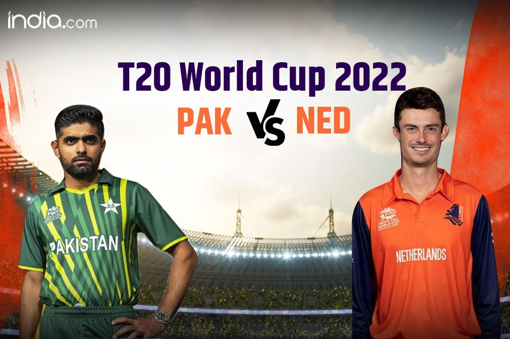
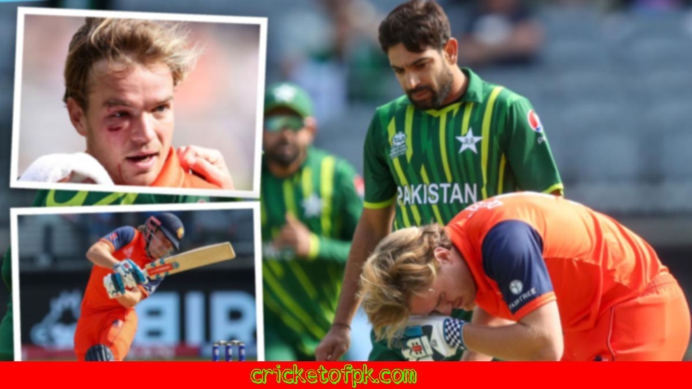

PAK vs NED
Pakistan finally got their first win of the ICC World T20 with a convincing 91-run victory over Netherlands. The game was largely one-sided with the Pakistan batsmen scoring heavily with the ball not being able to contain the Dutch attack. The game could have been even more one-sided if not for some brilliant batting by the Netherlands' Robin Uthappa. The win puts Pakistan in a good position as they face India in their next game. With India also having won their first game, the tournament is wide open and all the teams have a chance to win it. Catch all the action from the next game between India and South Africa starting at 7pm with Cheers!
Pakistan finally got their first points of the ICC World Twenty20 with a victory over Netherlands. This was a much closer game than the 91 run loss suggested, with both sides scoring heavily in the early innings. However, Pakistan's bowling was too good for the Dutch, who just couldn't make any headway with the bat. This win sets up a very important game against India in the next round, and Pakistan will have to be on their game if they want to progress. With all the other results still to be decided, this is only the beginning of a very exciting World Twenty20.
Pakistan finally got a win over Netherlands, and they did it in dominating fashion. The Netherlands batsmen just couldn't seem to get a handle on the Pakistani attack and were scored heavily against. 91 was the scoreline that showed just how good Pakistan were. This win will give them some much-needed confidence, and they'll face tougher tests in the coming games. Stay tuned for all the action from the next game, where India takes on South Africa.
HARIS RAUF BOUNCER

Bas de Leede was in the middle of a great innings for the Netherlands when he was injured in the sixth over. De Leede was hit on the helmet by a bouncer from the Pakistani pacer. The batter attempted to swipe away the delivery, but was hit in the helmet by the bounce. De Leede was taken out of the game and was not able to continue. The Netherlands were eventually bowled out for 134. De Leede is a very good all-rounder and his absence will be felt by the Netherlands.
Bas de Leede was injured in the sixth over of the Netherlands innings by a vicious bouncer from Pakistani pacer Mohammad Amir. The batter, attempting to swipe away the short delivery, was struck in the helmet by the unexpected bounce. De Leede's injury forced the Dutch to bring in their all-rounder, John de Liefde, in the eleventh over.
Bas de Leede was hit in the helmet by the bouncer in the sixth over of the Netherlands' inning. This caused him to leave the field with an injury, and he was replaced by Nick Harmer.
About Us
Cricket of Pakistan is a project of Express Media
Group. This website provides its viewers with the latest news in the cricket world.
Moreover, Cricket of Pakistan is the first cricket portal where you can read news in this site. The site primarily focuses on providing the
latest news and information on Pakistani cricket, both at the international and
snational level.